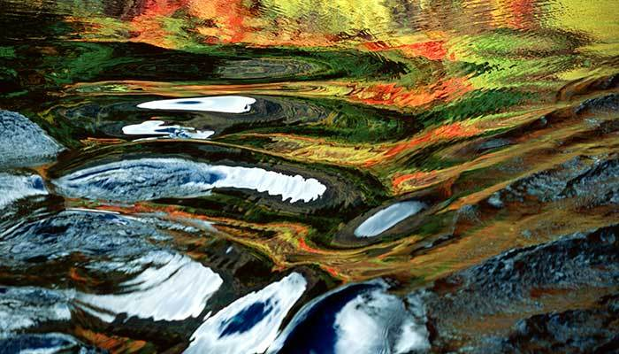

九寨沟位于四川省阿坝藏族羌族自治州九寨沟县漳扎镇，是白水沟上游白河的支沟，以有九个藏族村寨（又称何药九寨）而得名。九寨沟海拔在2000米以上，遍布原始森林，沟内分布108个湖泊
九寨沟四季景色迷人。动植物资源丰富，种类繁多，原始森林遍布，栖息着大熊猫等十多种稀有和珍贵野生动物。远望雪峰林立，高耸云天，终年白雪皑皑，加上藏家木楼、晾架经幡、栈桥、磨房、传统习俗及神话传说构成的人文景观，被誉为“美丽的童话世界”。
九寨沟地处岷山山脉南段尕尔纳峰北麓，是长江水系嘉陵江源头的一条支沟，也是青藏高原向四川盆地过渡的地带，地质结构复杂。这里高差悬殊、气候多样、山明水秀。 九寨沟主沟呈“Y”字形，总长50余公里。沟中分布有多处湖泊、瀑布群和钙华滩流等。水是九 寨沟景观的主角。碧绿晶莹的溪水好似项链般穿插于森林与浅滩之间。色彩斑斓的湖泊和气势宏伟的瀑布令人目不暇接。
原始森林覆盖了九寨沟一半以上的面积。林中植物种类繁多，现有天然森林近3万公顷，植物2000余种。多种野生动物繁衍栖息于此，其中包括脊椎动物170种、鸟类141种，属国家保护的有17种。林地上积满厚厚的苔藓，散落着鸟兽的羽毛，充满原始森林的风貌，使 人仿佛置身于美妙的世外天地。
九寨沟国家自然保护区是岷山山系大熊猫A种群的核心地和走廊带，具有典型的自然生态系统，为全国生物多样性保护的核心之一。动植物资源丰富，具有极高的生态保护、科学研究和美学旅游价值。区内生物多样性丰富，物种珍稀性突出。九寨沟又是以高山湖泊群、瀑布、彩林、雪峰、蓝冰和藏族风情并称“九寨沟六绝”，被世人誉为“童话世界”，号称“水景之王”。九寨沟还是以地质遗迹钙化湖泊、滩流、瀑布景观、岩溶水系统和森林生态系统为主要保护对象的国家地质公园，具有极高的科研价值。